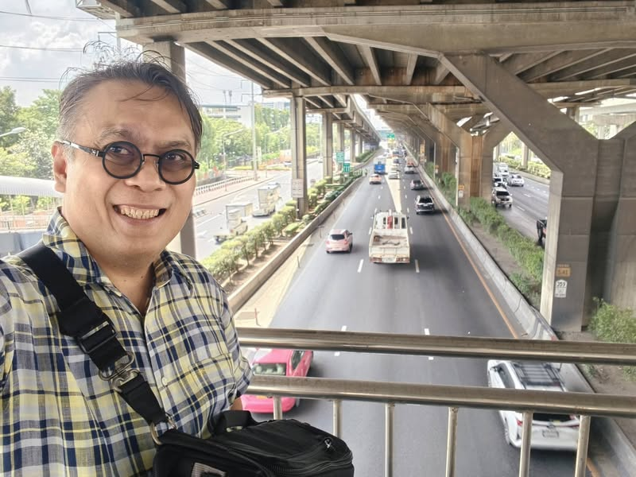

Archive
พานิสิตเก็บวิดีโอจราจรนอกมหาวิทยาลัย
พานิสิต Madlab KU เก็บวิดีโอต้นฉบับสำหรับการทดลองบนสะพานลอยใต้ทางด่วนใกล้ประตูวิภาวดี ม.เกษตร หลังจากกังวลว่าลักษณะรถภายในมหาวิทยาลัยอาจทำให้ข้อมูลไบแอส
video-researchdata-collectiondataset-biasstudent-researchcomputer-visionresearch-methodology
Rewritten Post
พานิสิตเก็บวิดีโอจราจรนอกมหาวิทยาลัย


ผมพานิสิต Madlab KU ที่ทำวิจัยเกี่ยวกับวิดีโอออกมาเก็บ raw footage หรือวิดีโอต้นฉบับสำหรับใช้ในการทดลอง จุดที่เลือกคือสะพานลอยใต้ทางด่วน ใกล้ประตูวิภาวดี มหาวิทยาลัยเกษตรศาสตร์
เดิมตั้งใจจะถ่ายในมหาวิทยาลัย แต่ผมกังวลว่าลักษณะรถในมหาวิทยาลัยอาจทำให้ ข้อมูลไบแอส จึงเดินออกมาเก็บภาพการจราจรด้านนอกแทน
เก็บข้อมูลใต้ทางด่วน ร่มเย็นกว่าที่คิด
จุดถ่ายอยู่บนสะพานลอยใต้ทางด่วน ร่มและเย็นสบาย ระหว่างที่ยืนเก็บข้อมูลอยู่ ก็มีคนรู้จักขับรถผ่านมาแล้วทักว่าผมมาทำอะไรแถวนี้ ทั้งที่ผมยืนอยู่บนสะพานลอยแท้ ๆ ได้แก่ Siwat Janvilai และ Pk Kaewkan

Original
Original Facebook Post
พานิสิต Madlab KU ที่ทำวิจัยเรื่องวีดีโอมาเก็บข้อมูลทำ ,raw footage เพื่อการทดลอง จริงๆจะถ่ายในมหาลัยแหละ แต่มหาลัยอาจมีรถกรูมากไปแล้วอาจไบแอส ก็เดินมาถ่ายบนสะพานใต้ทางด่วน โคตรดี ร่มเย็น
ยืนอยู่บนสะพานลอยแท้ๆ มีคนขับผ่านแล้วทักว่าผมมาทำอะไรแถวนี้ Siwat Janvilai Pk Kaewkan
บทความอื่นที่เกี่ยวข้อง